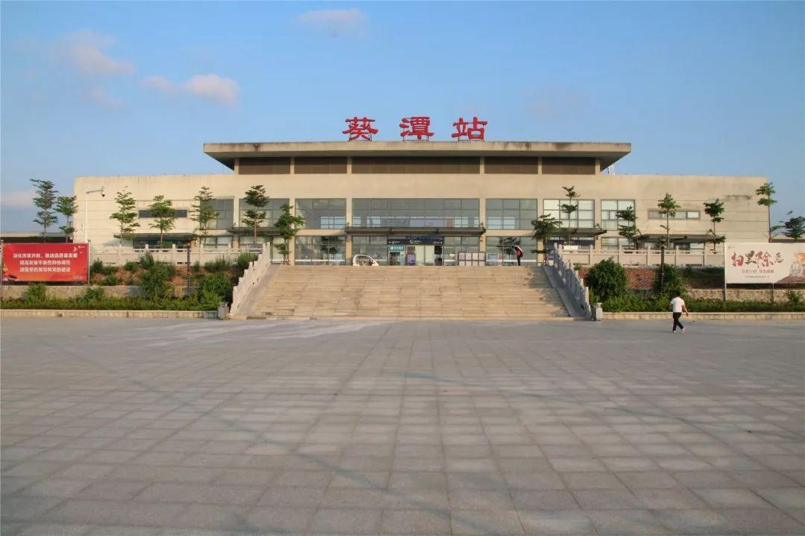
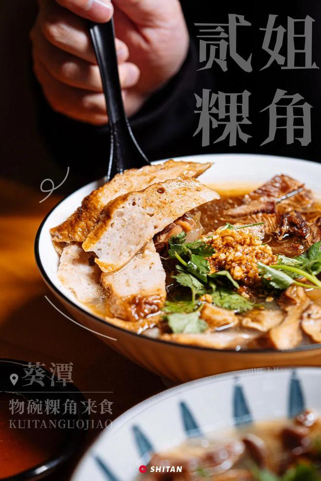
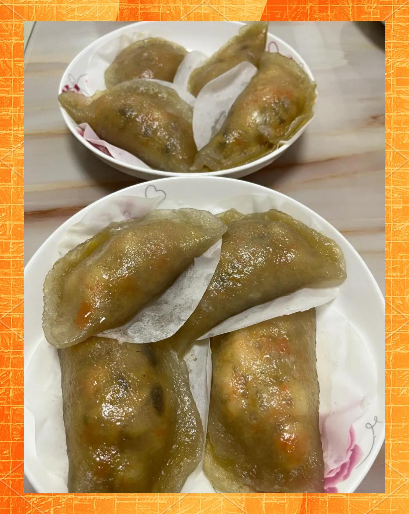

欢迎来到葵潭
葵潭镇，隶属于广东省揭阳市惠来县,位于惠来县西部,东连惠城镇,南接溪西镇,东港镇和大南山华侨管理区,西接陆丰,北连普宁辖区总面积144.85平方千米。
葵潭是一个充满魅力的地方,素有“西来潮汕第一站”之称。
文化底蕴丰富,历史悠久,是一代人永远的回忆。
美食推荐
——————
品味葵潭的独特风味
葵潭葱管
葵潭葱管是广东揭阳惠来县葵潭镇的特色传统小吃，外形似春卷，因馅料以切粒大葱为核心而得名，以皮脆馅多、香气浓郁著称 。

粿角
葵潭粿角，又称“瓮粿”或“按粿”，是广东省揭阳市惠来县葵潭镇极具代表性的传统特色小吃。作为潮汕美食地图中独具一格的存在，它以其独特的制作工艺、丰富的口感层次和深厚的文化底蕴，成为当地乃至外地食客必尝的美味。

薯粉粿
葵潭薯粉粿是广东省揭阳市惠来县葵潭镇极具代表性的传统特色小吃，属于潮汕粿品文化的重要组成部分。它以独特的制作工艺、晶莹剔透的外观以及丰富多变的口感，深受当地居民及外地食客的喜爱，不仅是日常餐桌上的美味，也是节庆祭祀和宴请宾客的重要点心。
景点推荐
——————
发现葵塘最美的风景